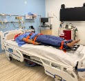
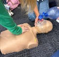

Experience
This page highlights my experience in academic projects, volunteer work, and creative pursuits.
Tufts Mini-Med School Summer Program — (June, 2026)
- Participated in a summer medical program focused on medicine, healthcare, and biomedical science.
- Engaged in activities such as suturing, IV insertion, CPR, growing bacteria to observe effectiveness of antibodies, dissections, and realistic emergency simulations.
- Strengthened interest in interdisciplinary STEM fields, including biology, medicine, and biotech.


AI Pneumonia Detection Model — (August, 2024)
- Helped develop an AI model that provided patients with a quicker diagnosis of Pneumonia.
- Implemented different modules: Input, Processing, Training, and Output.
- Trained our model using data from a public dataset available on Kaggle.
- Used Python for code and TensorFlow to train the AI model.